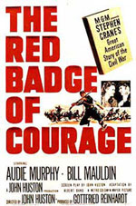

|

|

|
Year of Release: 1951
Cast: Audie Murphy as Henry Fleming, Royal Dano as
The Tattered Soldier, John Dierkes as Jim Conklin (the Tall
Soldier), Bill Mauldin as Tom Wilson (the Loud Soldier)
Key People Behind the Scenes: Directed by John
Huston. Screenplay by Albert Band adapted from the novel by
Stephen Crane. Produced by Gottfried Reinhardt.
Setting: Virginia, the Civil War's eastern
theater.
Plot Summary: A young soldier is torn between his
fear and his desire to prove his courage. After fleeing his
first battle, he ultimately returns to prove himself in
combat.
Point of View: Northern
Critics' Response: Critics gave the film
high marks for its gritty realism and its excellent performances.
Awards: None
Historians' Response: Although the film is not strong
on details, it generally gets praise from historians
for giving a more real sense of the soldier's experience
than can be found in most Civil War films.
Budget: $1,600,000 ($13,601,000 in current dollars).
Box Office Gross: $1,000,000 ($8,735,000 in current dollars).
Source: Christopher Bates for the History 139A website
|